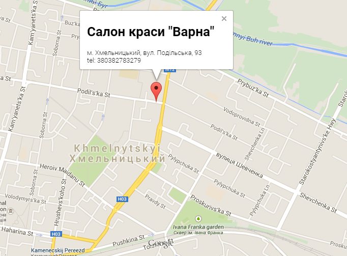

Понедельник - Суббота
10:00 - 21:00
обед 13:00 - 14:00
Воскресенье выходной
10:00 - 21:00
обед 13:00 - 14:00
Воскресенье выходной
-
Контакты:
- +(380) 67 - 253 - 73 - 27 Наташа
- 78-32-79 Рабочий
- E-mail: info@salon.ru

Контакти

Телефони:
+(380)67-253-73-27;
E-mail: natashaStudio@ukr.net
Адрес
м.Хмельницький, вул. Подільська, 93
Час роботи: з 10:00 до 21:00
Вихідний: неділя
ЗАПИСАТЬСЯ В САЛОН
Парикмахерские услуги
Интересно, что как бы ни ругали отечественную школу парикмахерского искусства, и как бы упорно ни старались отгородиться от наших дипломов на Западе, наши парикмахеры все равно пользуются большой популярностью. Дело в том, что западные школы в процессе обучения проводят занятия на манекенах и париках, в наших же школах ученики чаще всего ставят эксперименты друг на друге.
Парикмахерские услуги
Интересно, что как бы ни ругали отечественную школу парикмахерского искусства, и как бы упорно ни старались отгородиться от наших дипломов на Западе, наши парикмахеры все равно пользуются большой популярностью. Дело в том, что западные школы в процессе обучения проводят занятия на манекенах и париках, в наших же школах ученики чаще всего ставят эксперименты друг на друге.
Парикмахерские услуги
Интересно, что как бы ни ругали отечественную школу парикмахерского искусства, и как бы упорно ни старались отгородиться от наших дипломов на Западе, наши парикмахеры все равно пользуются большой популярностью. Дело в том, что западные школы в процессе обучения проводят занятия на манекенах и париках, в наших же школах ученики чаще всего ставят эксперименты друг на друге.
Парикмахерские услуги
Интересно, что как бы ни ругали отечественную школу парикмахерского искусства, и как бы упорно ни старались отгородиться от наших дипломов на Западе, наши парикмахеры все равно пользуются большой популярностью. Дело в том, что западные школы в процессе обучения проводят занятия на манекенах и париках, в наших же школах ученики чаще всего ставят эксперименты друг на друге.
Парикмахерские услуги
Интересно, что как бы ни ругали отечественную школу парикмахерского искусства, и как бы упорно ни старались отгородиться от наших дипломов на Западе, наши парикмахеры все равно пользуются большой популярностью. Дело в том, что западные школы в процессе обучения проводят занятия на манекенах и париках, в наших же школах ученики чаще всего ставят эксперименты друг на друге.
Парикмахерские услуги
Интересно, что как бы ни ругали отечественную школу парикмахерского искусства, и как бы упорно ни старались отгородиться от наших дипломов на Западе, наши парикмахеры все равно пользуются большой популярностью. Дело в том, что западные школы в процессе обучения проводят занятия на манекенах и париках, в наших же школах ученики чаще всего ставят эксперименты друг на друге.